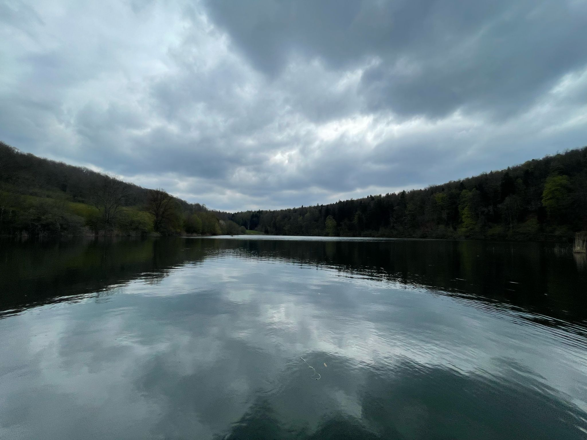
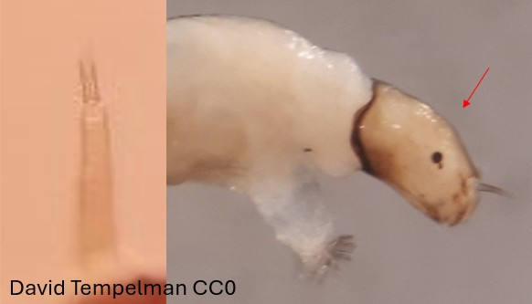

Nanocladius groupe dichromus - parvulus
Dents centrales et latérales bien visibles, plaques ventromentales en position diagonale, griffes des parapodes antérieurs lisses ou faiblement dentelées


1er segment de l'antenne 1,7-2,1 fois plus long que la longueur combinée des autres segments
Capsule céphalique formant un angle aigu dorsalement